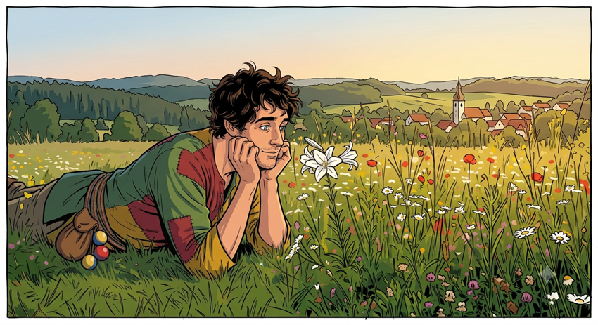

Pero..., pero..., ¿esto qué es?
¡Anda, hola! No te había visto. Pasa, pasa; acomódate. Ya sé, ya sé..., ¡todo está muy cambiado! Sí, ¿verdad? Antes todo era muy..., oscuro, muy... ¡Muy infernal!
Pues ahora no lo es. Acabas de entrar a un lugar copletamente distinto, aunque sigues dentro de mi cabeza, de alguna manera y por así decir, claro. Porque aquí ya no verás cosas que necesitan salir, respirar, ver la luz como pasaba en Infierno S.A. sino que aquí verás justo lo contrario. ¿Qué verás? Déjame que te explique (que es un poco complicado), no te impacientes.
Saltimbanquis y Azucenas
es un juego con las palabras y las frases, una diversión, un lío, un absurdo.
Lo que sucede cuando te preguntas: ¿Qué pasa si escribo a lo loco, sin pensar lo que quiero decir, si escribo
salga lo que salga?
Y lo que sale es, sí, un absurdo. Porque no hay que buscarle un sentido a lo que
aquí se dice (aunque yo creo que, de alguna manera y para mí, lo tiene) . Y sin embargo, conforme vayas leyendo, verás que, para ti,
también lo tiene. O puede que no se lo encuentres. No lo sé. Deberás decidirlo tú.
"Saltimbanquis" y "azucenas" fueron las dos primeras palabras que escribí "a lo loco" y conforme iba escribiendo,
me parecía ver un diálogo entre estos dos seres. Quizás no al principio, no en el saltimbanqui ~~ I ~~ (así es como yo los llamo),
pero sí poco a poco porque, escribir saltimbanquis
se iba convirtiendo en una especie de "evasión", una especie de juego.
Pues ya está. Cuando leas Saltimbanquis y Azucenas
sabrás que estás leyendo un delirio, un algo, un absurdo...
Pero me gustaría que, si no sales corriendo al leer el primero, tú también "vieras" esas alocadas conversaciones entre
este par de curiosos personajes que veo yo.
Mis saltimbanquis son pequeñas cosas, no los juzgues duramente. ¡Juega con ellos!